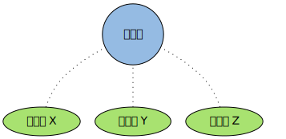
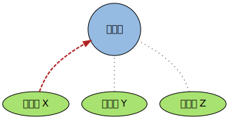
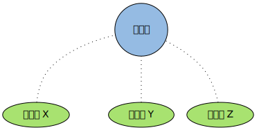
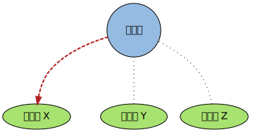

事件
事件 是 Redis 服务器的 核心 ， 它处理两项重要的任务：
- 文件事件：在多个客户端中实现 多路复用 ，接受它们发来的命令请求，并将命令的执行结果返回给客户端
- 时间事件：实现服务器定时操作 server cron job
下面就来介绍这两种事件， 以及它们背后的运作模式
文件事件
Redis 服务器通过在 多个 客户端 之间进行 *多路复用*， 从而实现高效的命令请求处理
多个客户端通过套接字连接到 Redis 服务器中， 但只有在套接字可以“无阻塞”地进行读或者写时， 服务器才会和这些客户端进行交互
Redis 将这类因为对套接字进行多路复用而产生的事件称为 文件事件 file event ， 文件事件可以分为 读事件 和 写事件 两类
读事件
读事件标志着 客户端命令请求 的 发送 状态。当一个新的客户端连接到服务器时， 服务器会给为该客户端绑定读事件， 直到客户端断开连接之后， 这个读事件才会被移除。读事件在整个网络连接的生命期内， 都会在 等待 和 就绪 两种状态之间切换：
- 当客户端只是连接到服务器，但并 没有 向 服务器发送命令 时，该客户端的读事件就处于 等待 状态
- 当客户端给服务器发送命令请求，并且 请求已到达 时（相应的套接字可以 无阻塞 地执行读操作），该客户端的读事件处于 就绪 状态
作为例子， 下图展示了三个已连接到服务器、但并没有发送命令的客户端：

这三个客户端的状态如下表：
| 客户端 | 读事件状态 | 命令发送状态 |
| 客户端 X | 等待 | 未发送 |
| 客户端 Y | 等待 | 未发送 |
| 客户端 Z | 等待 | 未发送 |
之后， 当客户端 X 向服务器发送命令请求， 并且命令请求已到达时， 客户端 X 的读事件状态变为就绪：

这时， 三个客户端的状态如下表（只有客户端 X 的状态被更新了）：
| 客户端 | 读事件状态 | 命令发送状态 |
| 客户端 X | 就绪 | 已发送，命令已达到 |
| 客户端 Y | 等待 | 未发送 |
| 客户端 Z | 等待 | 未发送 |
当事件处理器被执行时， 就绪的文件事件会被识别到， 相应的 命令请求 会被 发送 到 命令执行器 ， 并对命令进行 求值
写事件
写事件标志着 客户端 对 命令结果 的 接收 状态。和客户端自始至终都关联着读事件不同， 服务器 只会 在 有命令结果 要传回给客户端时， 才会为客户端 关联 写事件， 并且在 命令结果传送完毕 之后， 客户端和写事件的关联就会被 移除 。一个写事件会在两种状态之间切换：
- 当服务器有命令结果需要返回给客户端，但客户端还 未能 执行无阻塞写，那么写事件处于 等待 状态
- 当服务器有命令结果需要返回给客户端，并且客户端 可以 进行无阻塞写，那么写事件处于 就绪 状态
当客户端向服务器发送命令请求， 并且请求被接受并执行之后， 服务器就需要将保存在缓存内的命令执行结果返回给客户端， 这时服务器就会为客户端关联写事件。作为例子， 下图展示了三个连接到服务器的客户端， 其中服务器正等待客户端 X 变得可写， 从而将命令的执行结果返回给它：

此时三个客户端的事件状态分别如下表：
| 客户端 | 读事件状态 | 写事件状态 |
| 客户端 X | 等待 | 等待 |
| 客户端 Y | 等待 | 无 |
| 客户端 Z | 等待 | 无 |
当客户端 X 的套接字可以进行无阻塞写操作时， 写事件就绪， 服务器将保存在缓存内的命令执行结果返回给客户端：

此时三个客户端的事件状态分别如下表（只有客户端 X 的状态被更新了）：
| 客户端 | 读事件状态 | 写事件状态 |
| 客户端 X | 等待 | 就绪 |
| 客户端 Y | 等待 | 无 |
| 客户端 Z | 等待 | 无 |
当命令执行结果被传送回客户端之后， 客户端和写事件之间的关联会被解除（只剩下读事件）， 至此， 返回命令执行结果的动作执行完毕：
前面提到过，读事件只有在客户端断开和服务器的连接时，才会被移除。 这也就是说，当客户端关联写事件的时候，实际上它在同时关联读/写两种事件。 因为在同一次文件事件处理器的调用中， 单个客户端只能执行其中一种事件（要么读，要么写，但不能又读又写）， 当出现读事件和写事件同时就绪的情况时， 事件处理器优先处理读事件。 这也就是说， 当服务器有命令结果要返回客户端， 而客户端又有新命令请求进入时， 服务器先处理新命令请求